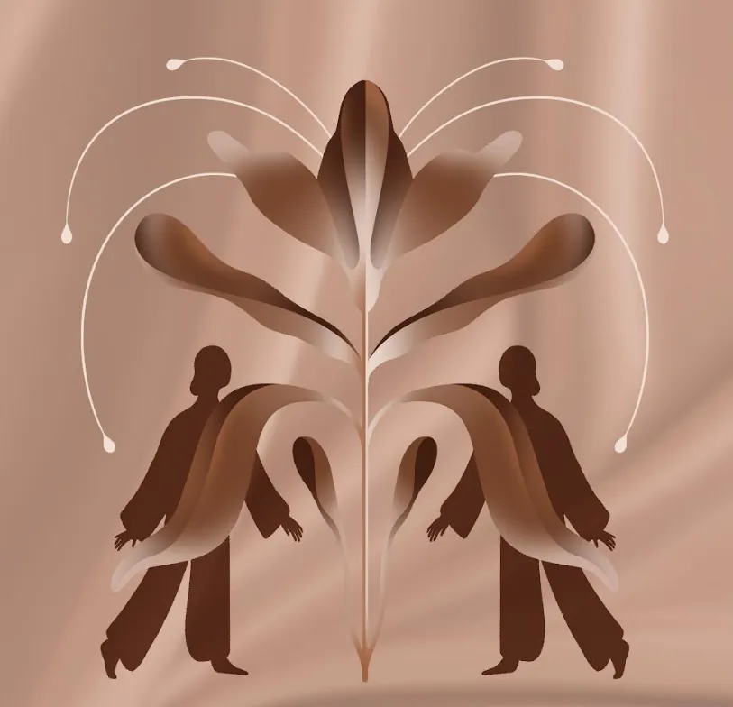
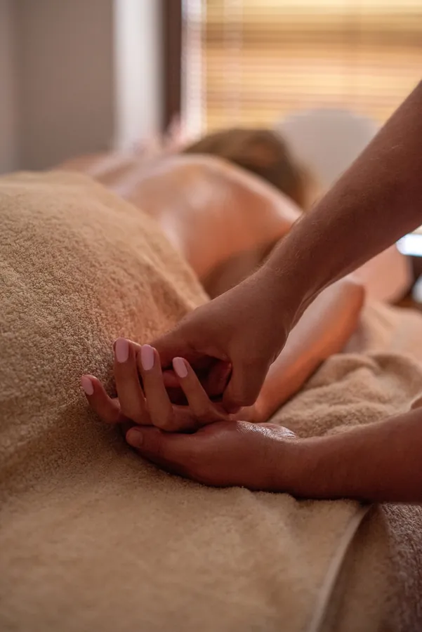
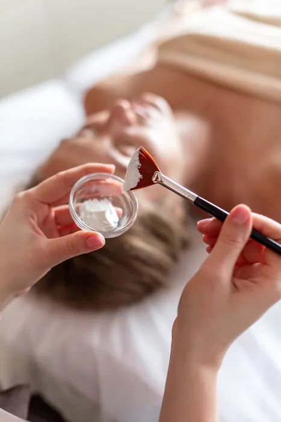
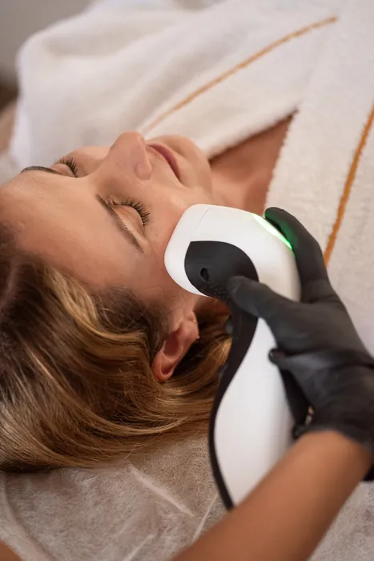
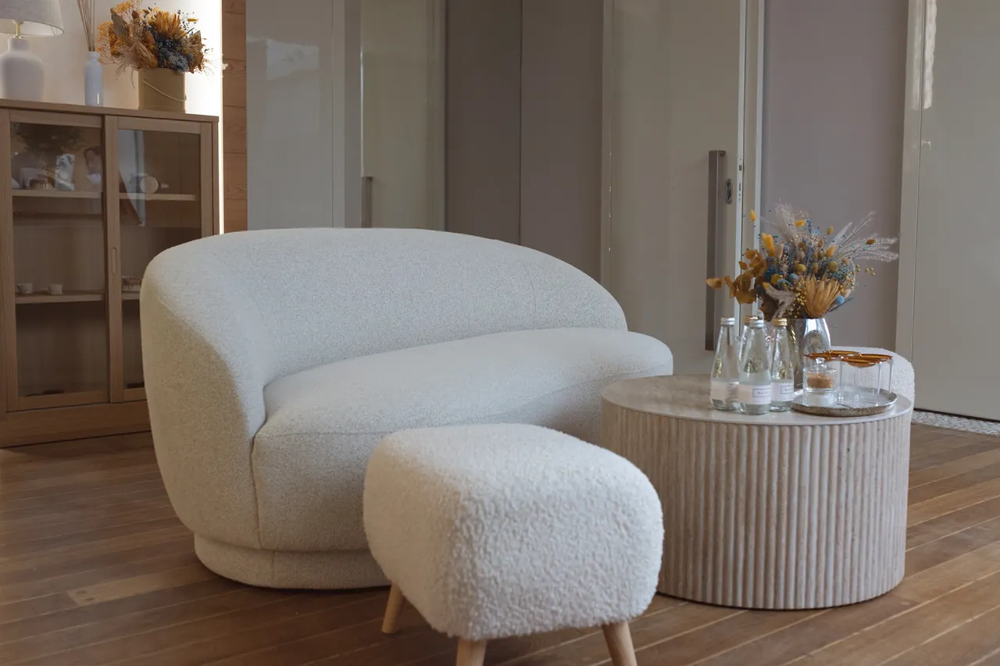
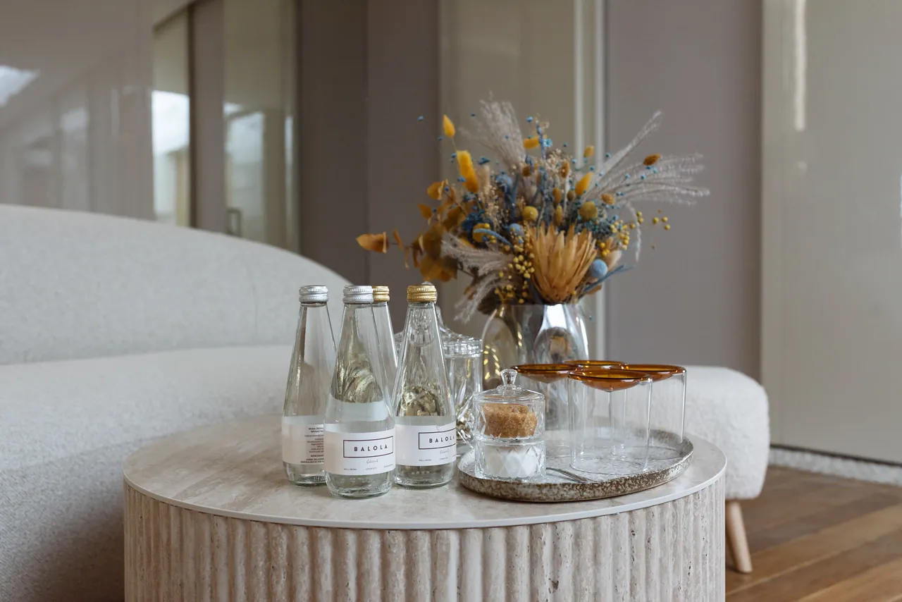
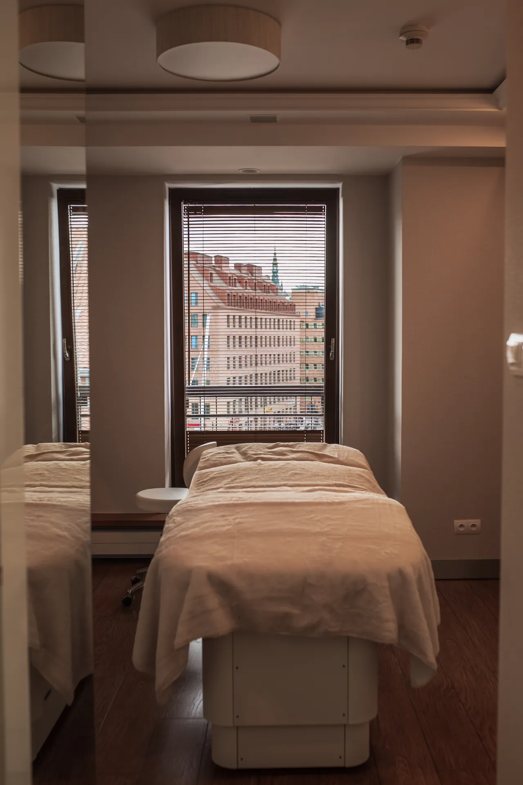
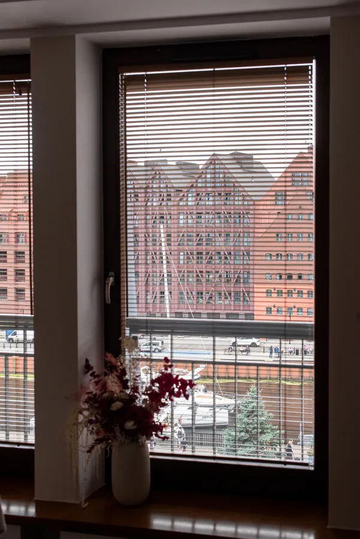

A cosy spa by the Motława · Hotel Gdańsk Boutique, 5th floor
A moment for yourself that stays with you longer
A place for those who want to look better, feel better and slow down, even if just for a moment.
Longevity: caring for yourself for the long run
“Modern skincare, recovery and well-being in the spirit of contemporary longevity.”
At Balola, longevity is not just another treatment category - it is how we work. The aim is for your skin and body to stay in good condition not only after one visit, but for years to come. We combine relaxation and manual therapies with cosmetology and modern technologies.

- RecoveryRest and treatments that support the natural renewal of skin and body.
- Mindful careTreatments matched to your skin and a home routine you can keep up.
- Well-beingCalm, breathing and time for yourself matter as much as the mirror.
New to longevity? Start with a free 30-minute consultation.
More about our philosophyTreatments
From a calm massage to treatments with modern devices. Prices come from our Booksy profile, where you can also choose your time.

from 190 złFace and body massages
Relaxing and classic massage, Kobido, foot and facial reflexology.
 from 450 zł
from 450 złRituals and HeadSPA
Amber and Yuzu for the body, HeadSPA for scalp and hair.

from 80 złFacial treatments
Glow & Go, ProXN, Diego dalla Palma, C-Bomb, peels and cleansing.
 from 150 zł
from 150 złLongevity add-ons
An addition to a face or body treatment, or a 30-minute longevity session on its own.

from 120 złDevice-based treatments
ZaffiroLift, Geneo X, LaserMe, InPure and more.
 from 200 zł
from 200 złBody treatments
Sculptorea rituals, Arosha therapies, STORZ shockwave.

A private sauna area
When you book a treatment with us, you can reserve the whole sauna area just for yourself in advance. Combine your treatment with the saunas and spend a whole afternoon or evening with us.
- Three saunas: Finnish, steam and infrared
- A relaxation area with drinks
- Showers
- Towels
- Bathrobes
- Slippers
- Disposable underwear
We are also open on Saturdays, Sundays and selected public holidays.
See the sauna area on the Hotel Gdańsk Boutique website

For two and for special occasions
A date, a birthday, a hen party or simply a treatment together with someone close. We have a duo room for couples’ massage and HeadSPA Duo for two people at the same time.

Fifth floor, overlooking the Motława
Balola Gdańsk is located in Hotel Gdańsk Boutique at 9 Szafarnia Street. The treatment room windows look out over the Motława and the old granaries, and inside you will find a warm interior of beige and wood. The sea is close by, and the city rush stays outside.
For Tricity locals
A regular place to recharge: treatment series, a skincare plan and regular visits with the same specialists.
For hotel guests
The spa is in the same building. A ritual after your journey or a moment of calm before an evening in town. Booking and service in English.
An interior made for slowing down
Reception, lounge, treatment rooms and home care. Swipe to see more. The whole interior









Brands we work with
We chose our skincare products above all for their proven, exceptional effectiveness, achieved through the innovative formulas they use. The cosmeceuticals available at our spa are among the very best cosmetological products in the world.
ProXN
A Polish professional skincare brand created for effective and safe skin care.
Intraceuticals
An Australian cosmetology brand known worldwide for its oxygen infusion method.
IMAGE Skincare
An American medical brand built on advances in dermatology, aesthetic medicine and cosmetology.
Diego dalla Palma
An Italian premium brand combining cosmetologists’ experience with a passion for skincare.
RVB LAB
An Italian professional brand for advanced, effective and safe skin care.
Arosha
Products made exclusively for body treatments, best known for bandages soaked in active ingredients.
Lycon
A leading Australian brand of depilatory waxes based on aloe, chamomile, lavender, resin and beeswax.
- More about the brands
What our guests say
Ratings from two platforms and a few longer reviews of specific treatments.
Ratings checked on 9 Nov 2026. Booksy reviews are quoted verbatim in Polish.
„Jestem bardzo zadowolona z wizyty! Zabieg przebiegł świetnie, atmosfera była bardzo miła i komfortowa. Konsultacja była szczegółowa, wszystko zostało wyjaśnione. Widać pełen profesjonalizm i troskę o klienta. Na pewno wrócę ponownie! Podziękowanie dla Pani Katarzyny Kreńskiej”
„Zabieg bardzo relaksujący i odżywczy. Pan Hubert dokładnie omawiał każdy etap zabiegu, dzięki czemu czułam się zaopiekowana i w pełni komfortowo. Profesjonalne podejście, miła atmosfera i chwila prawdziwego relaksu. Zdecydowanie polecam!”
„Świetnie wykonany zabieg, Pani Katarzyna sprawiła, że atmosfera podczas zabiegu była przyjemna i czułem się zaopiekowany choć trochę mnie stresował zabieg laserowy. Polecam serdecznie”
„Bardzo przyjemny masaż, piękne glow na twarzy, super atmosfera, profesjonalnie i przytulnie. Polecam serdecznie”
Modern solutions for skin, body and well-being, designed for recovery, balance and results that last.
Beauty. Longevity. Deep reset.
12 years of Balola. It all began in Sopot
Balola was founded in Sopot for active, demanding and informed women. Gdańsk is the next chapter of that story, with its own character and treatments, and the same care for results and for how you feel.
About usBooking and directions
Balola GdańskHotel Gdańsk Boutique, 5th floor
9 Szafarnia Street, 80-755 Gdańsk
- Monday10:00-20:00
- Tuesdayclosed
- Wednesday - Sunday10:00-20:00
Hotel Gdańsk Boutique, 5th floor
9 Szafarnia Street, 80-755 Gdańsk
Google Maps is turned off in your cookie settings.
Balola SPA is on the 5th floor of Hotel Gdańsk Boutique, in the Yachting wing, by Marina Gdańsk. The entrance is through the hotel’s main reception in the historic Granary (Spichlerz) wing.